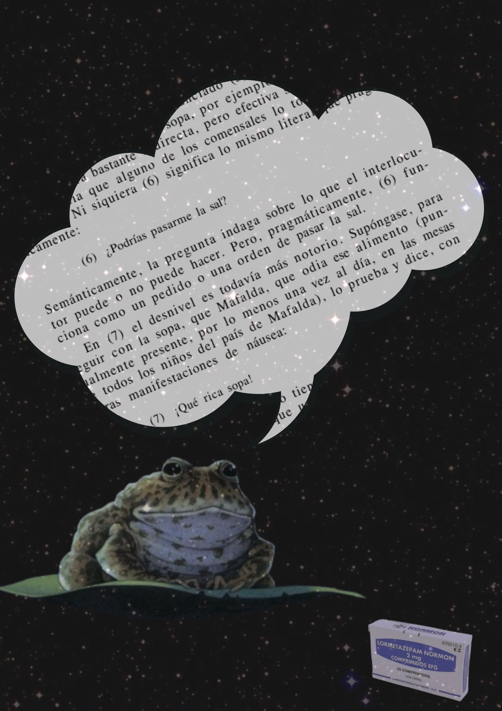

El cuento “Tuesday” de D. Wiesner es utilizado en el diagnóstico ADOS-2 para la detección del autismo en personas adultas (cuyo procedimiento se basa en que el evaluado cuente una historia utilizando este soporte de ilustraciones sin texto sobre unas ranitas). Así, en Ranacepam® utilizo la ilustración de Wiesner en combinación con un fragmento de El abecé de la pragmática de Graciela Reyes para llevar la interpretación de lo “no dicho” hasta el paroxismo, y es que en pragmática se empieza a hablar de explicaturas (lo dicho) e implicaturas (lo no dicho) para analizar la lengua. Aquí se juega con estos términos y la cuestión de que el análisis de la lengua es el corazón de esta prueba en el ADOS-2 (el psicólogo busca si el entrevistado ha conseguido atribuir estados mentales a las ranitas o si falta atribución mentalista, si hay una literalidad descriptiva o una atención al detalle extrema). Lo no dicho es el cuento en sí mismo, que está vacío, mientras que lo dicho es la palabra de la presunta persona neurodivergente en su narración.
Entonces, en este cartel está la linda cuestión de la atribución de la palabra, de invertir las funciones del lenguaje para construir una forma de narración distinta (las personas con TEA no conseguimos descifrar todo el proceso inferencial ni desambiguar enunciados de la misma manera, somos explicatura). Asimismo, los fármacos vuelven a estar presentes: en el propio título y en la cajita de Lormetazepam de la esquina inferior derecha. La ranita está de noche, en la oscuridad de un cielo estrellado. ¿Quizá habrá conseguido hablar porque realmente solo está soñando? ¿Podremos las personas autistas tomar palabra desde nuestro lugar otro, ajenos a la norma de lo capaz o la creación de espacios más justos es también un sueño?